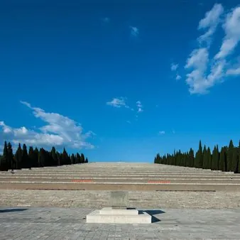

mer 4 nov
Treno storico della grande Guerra 2026
Il treno della Grande Guerra conduce i passeggeri da Trieste a Redipuglia in occasione della cerimonia di commemorazione di tutti i soldati caduti durante il primo conflitto mondiale. Al termine della celebrazione solenne è prevista per i passeggeri una visita guidata…
 Indicazioni
Indicazioni
- Costi e prenotazioni
- Costo non indicato · Prenotazione non indicata
- Programma
- Programma da verificare. Apri la fonte ufficiale per orari e possibili aggiornamenti.
- In caso di maltempo
- Nessuna indicazione specifica pubblicata.
- Note
- Acquisito automaticamente dalla fonte.
L’EVENTO
Descrizione completa
Locomotiva elettrica con carrozze anni '30 "Centoporte" e bagagliaio
Il treno della Grande Guerra conduce i passeggeri da Trieste a Redipuglia in occasione della cerimonia di commemorazione di tutti i soldati caduti durante il primo conflitto mondiale. Al termine della celebrazione solenne è prevista per i passeggeri una visita guidata accompagnati da esperti grande guerra dedicata ai luoghi che hanno segnato la storia. Incluso nell’esperienza il pranzo con il caratteristico rancio del soldato. Durante il viaggio in treno e in Stazione ferroviaria informazioni e approfondimenti di storia, tecnica e cultura ferroviaria a cura dell’Associazione Museo Stazione Trieste Campo Marzio
Per informazioni sul treno storico:
INFOPOINT TOLMEZZO
Tel. +39 0433 44898
Cell. +39 335 7747958
info.tolmezzo@promoturismo.fvg.it
Per eventuali informazioni riguardo al percorso turistico e al Rancio del soldato:
IAT Fogliano Redipuglia
Via III Armata, 37
Tel +39 0481 489139
info@prolocofoglianoredipuglia.it
Il treno della Grande Guerra porta i passeggeri da Trieste a Redipuglia per assistere alle celebrazioni solenni alla presenza di alte cariche istituzionali che ogni 4 novembre hanno luogo nel Sacrario di Redipuglia per commemorare tutti i soldati caduti nel primo conflitto mondiale.
Al termine della cerimonia, accompagnati da esperti grande guerra, i passeggeri vivranno un viaggio nella storia del territorio. Dal Colle S.Elia, di cui ricorre quest'anno il centenario, primo cimitero della Grande Guerra dalla tipica forma a gironi danteschi, al Sacrario di Redipuglia, luogo simbolo. Un viaggio nella memoria sulle tracce dei primi pellegrinaggi ai luoghi di sepoltura dei caduti con aspetti inediti. Incluso nell’esperienza il pranzo con il caratteristico rancio del soldato.
Dettagli sul pranzo : Per i passeggeri del treno storico, incluso nell’esperienza senza costi aggiunti il pranzo con il caratteristico rancio del soldato di cui si raccomanda la prenotazione contattando Ufficio IAT al seguente riferimento info@prolocofoglianoredipuglia.it tel. 0481 489139 Il Rancio verrà servito nell’ area sportiva adiacente il parcheggio.
Dettagli sulle visite guidate: A conclusione della cerimonia ritrovo alla casetta IAT nel piazzale del Parcheggio antistante il Sacrario e a turno visita guidata e rancio del soldato. Le visite guidate a cura di esperti storici sono incluse senza costi aggiunti per i passeggeri del treno. Informazioni info@prolocofoglianoredipuglia.it tel. 0481 489139
15.15- 15.45 c/o Stazione Ferroviaria di Redipuglia informazioni e approfondimenti di storia, tecnica e cultura ferroviaria a cura dell’Associazione Museo Stazione Trieste Campo Marzio
INFORMAZIONE DI SERVIZIO AI PASSEGGERI
Dalla Stazione ferroviaria di Redipuglia il Sacrario è facilmente raggiungibile a piedi.
Orari
Andata: Trieste Centrale 07:40 Monfalcone 08:12 Redipuglia 08:23
Ritorno Redipuglia 15:45 Monfalcone 15:56 Trieste Centrale 16:25
Tariffe:
Andata e ritorno in treno storico
Adulti 10€;
Ragazzi (dai 4 ai 12 anni non compiuti) 5€;
Bambini (dai 0 ai 4 anni non compiuti) gratis senza riservazione del posto a sedere
Biglietti in vendita attraverso tutti i canali Trenitalia: www.trenitalia.com ; biglietterie e self-service di stazione ; agenzie di viaggio abilitate.
ACQUISTA IL BIGLIETTO
IL PROGRAMMA
Programma e orari
Appuntamenti raccolti dalle fonti elencate. Dove manca un orario, non è ancora disponibile in questa scheda.
Programma pubblicato
- 15.15- 15.45 c/o Stazione Ferroviaria di Redipuglia
INFORMAZIONI UTILI
Prima di partire
- Controllare la fonte prima di partire.
ORGANIZZAZIONE